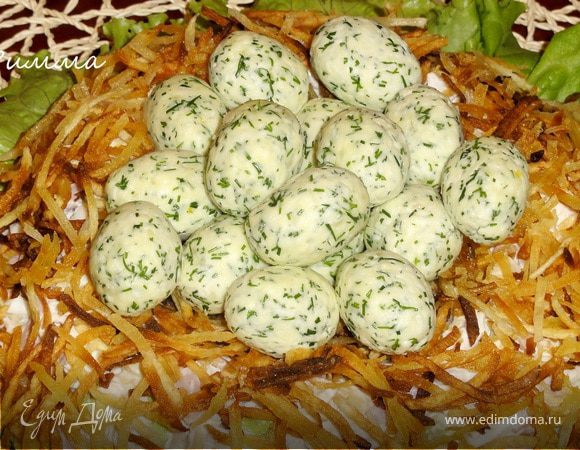

Гнездо глухаря
Таким образом можно украсить любой салат. Хрустящий жареный картофель отлично сочетается с нежным филе и свежими огурцами. Из указанного количества ингредиентов получается 6–8 порций.
Ингридиенты:

500 г куриного филе
5 яиц
500 г картофеля
100 г лука
250 г огурцов
зелень
соль
майонез
растительное масло
3–4 перепелиных яйца для украшения
Приготовление
Куриное филе отварить до готовности.
Остудить. Мелко нарезать.
Лук мелко нарезать.
Залить его кипятком и отставить на 10 минут (это делается для того, чтобы лук не горчил).
Затем воду слить, лук промыть в холодной воде.
Картофель почистить, натереть на терке для корейской моркови или нарезать тонкой соломкой.
Пожарить картофель в большом количестве растительного масла.
Чтобы картофель не слипался, рекомендую жарить его маленькими порциями.
Огурцы нарезать соломкой.
Отделить белки от желтков.
Белки натереть на мелкой терке.
Зелень мелко нарезать.
Смешать картофель (немного картофеля оставить для украшения), огурцы, филе, белки, лук, посолить по вкусу.
Заправить майонезом.
Выложить в салатницу.
Посыпать мелко нарезанной зеленью, сделать углубление, по кругу выложить картофель.
В углубление выложить вареные и почищенные перепелиные яйца.
Если нет перепелиных яиц, можно для украшения этого салата сделать яйца из желтков.
Для этого их необходимо растереть с майонезом, добавить мелко нарезанную зелень, слепить из этой массы небольшие шарики и выложить их на салат.